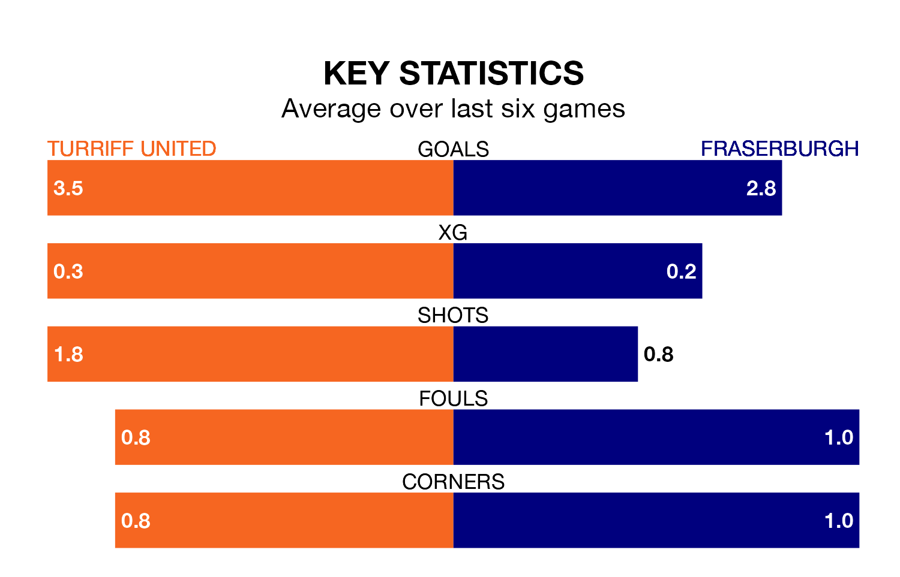

Fraserburgh come to the Haughs to play Turriff United on late Wednesday in excellent form, having collected 16 points from their last six games.
The visitors have won five and drawn one of their last six fixtures, while Turriff have four wins and two losses.
With 51 goals in 19 games so far this season, Fraserburgh are scoring more than average in the league with 2.7 goals per game. And they are conceding fewer than average, letting in 24 goals at a rate of 1.3 per game.
Turriff are also above average scorers, with 2.5 goals per game, compared to a league average of 1.9. They have conceded 1.8 goals per game.
In the last 10 years, Turriff and Fraserburgh have played each other on 14 occasions. Turriff won four of them and Fraserburgh 10.
On average, Turriff scored 0.8 goals and the Broch 3.1 in those matches.
Their last meeting was on October 14, when Fraserburgh won 3-0 at home.
The Broch are fourth in the table after 19 games, of which they have won 13 and drawn two, earning 41 points.
United are four places behind the away team in eighth, with 11 wins and eight losses putting them on 33 points.
Turriff's last match was on January 13, a 3-1 win against Wick Academy.
Fraserburgh beat Wick Academy 3-0 last time out, on Saturday.
Updated: 09:21 (UTC), 30/01/24